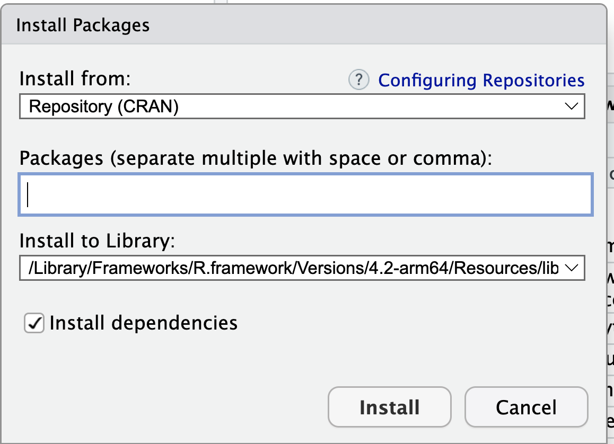

En RStudio podemos tener varias ventanas que nos permiten tener más control de nuestro “ambiente”, el historial, los “scripts” o códigos que escribimos y por supuesto, tenemos nuestra consola, que también tiene el símbolo “>” con R. Podemos pedir operaciones básicas
2+5
[1] 7
5*3
[1] 15
#Para escribir comentarios y que no los lea como operaciones ponemos el símbolo de gato# Lo podemos hacer para un comentario en una línea o la par de una instrucción1:5# Secuencia 1-5
[1] 1 2 3 4 5
seq(1, 10, 0.5) # Secuencia con incrementos diferentes a 1
R es un lenguaje de programación por objetos. Por lo cual vamos a tener objetos a los que se les asigna su contenido. Si usamos una flechita “<-” o “->” le estamos asignando algo al objeto que apunta la felcha.
x <-24# Asignacion de valor 24 a la variable x para su uso posterior (OBJETO)x/2# Uso posterior de variable u objeto x
[1] 12
x # Imprime en pantalla el valor de la variable u objeto
[1] 24
x <-TRUE# Asigna el valor logico TRUE a la variable x OJO: x toma el ultimo valor que se le asignax
[1] TRUE
Vectores
Los vectores son uno de los objetos más usados en R.
y <-c(2,4,6) # Vector numericoy <-c('Primaria', 'Secundaria') # Vector caracteres
Dado que poseen elementos, podemos también observar y hacer operaciones con sus elementos, usando “[ ]” para acceder a ellos
y[2] # Acceder al segundo valor del vector y
[1] "Secundaria"
y[3] <-'Preparatoria y más'# Asigna valor a la tercera componente del vectorsex <-1:2# Asigna a la variable sex los valores 1 y 2names(sex) <-c("Femenino", "Masculino") # Asigna nombres al vector de elementos sexosex[2] # Segundo elemento del vector sex
Masculino
2
Funciones
Algunas funciones básicas son las siguientes. Vamos a ir viendo más funciones, pero para entender cómo funcionan, haremos unos ejemplos y cómo pedir ayuda sobre ellas.
sum (10,20,30) # Función suma
[1] 60
rep('R', times=3) # Repite la letra R el numero de veces que se indica
[1] "R" "R" "R"
sqrt(9) # Raiz cuadrada de 9
[1] 3
Ayuda
Pedir ayuda es indispensable para aprender a escribir nuestros códigos. A prueba y error, es el mejor sistema para aprender. Podemos usar la función help, example y ?
help(sum) # Ayuda sobre función sumexample(sum) # Ejemplo de función sum
sum> ## Pass a vector to sum, and it will add the elements together.
sum> sum(1:5)
[1] 15
sum> ## Pass several numbers to sum, and it also adds the elements.
sum> sum(1, 2, 3, 4, 5)
[1] 15
sum> ## In fact, you can pass vectors into several arguments, and everything gets added.
sum> sum(1:2, 3:5)
[1] 15
sum> ## If there are missing values, the sum is unknown, i.e., also missing, ....
sum> sum(1:5, NA)
[1] NA
sum> ## ... unless we exclude missing values explicitly:
sum> sum(1:5, NA, na.rm = TRUE)
[1] 15
Mi ambiente
Todos los objetos que hemos declarado hasta ahora son parte de nuestro “ambiente” (environment). Para saber qué está en nuestro ambiente usamos el comando
ls()
[1] "sex" "x" "y"
gc() # Garbage collection, reporta memoria en uso
used (Mb) gc trigger (Mb) limit (Mb) max used (Mb)
Ncells 642657 34.4 1241948 66.4 NA 1241948 66.4
Vcells 1168306 9.0 8388608 64.0 16384 1875076 14.4
Para borrar todos nuestros objetos, usamos el siguiente comando, que equivale a usar la escobita de la venta de environment
rm(list=ls()) # Borrar objetos actuales
Directorio de trabajo
Es muy útil saber dónde estamos trabajando y donde queremos trabajar. Por eso podemos utilizar los siguientes comandos para saberlo
Ojo, checa, si estás desdes una PC, cómo cambian las “” por”/” o por “\”
Los paquetes los podemos instalar ya sea en el menú de paquetes en la ventana del lado derecho inferior (si tienes la configuración original) o podemos hacerlo por comandos.
Paso1

Paso2
Paso3
Y se verá algo así en la consola
Paso4
Esto es igual que instalemos los paquetes con comandos:
install.packages("janitor", dependencies = TRUE)
Después de instalados los paquetes o los palomeamos o los cargamos con un comando
library(janitor)
Attaching package: 'janitor'
The following objects are masked from 'package:stats':
chisq.test, fisher.test
Esto ya nos permite utilizarlos, es decir las funciones o comandos que vienen en ellos, ya pueden ser utilizados. Cargar los paquetes es una operación que se tiene que hacer en cada sesión (cuando abrimos) el programa R o RStudio. La instalación sólo se hace una vez.
Paquete {pacman}
En general, cuando hacemos nuestro código querremos verificar que nuestras librerías estén instaladas. Si actualizamos nuestro R y Rstudio es probable que hayamos perdido alguno.
Este es un ejemplo de un código. Y vamos a introducir un paquete muy útil llamado {pacman}
if (!require("pacman")) install.packages("pacman") # instala pacman si se requiere
Loading required package: pacman
pacman::p_load(tidyverse, readxl, writexl, haven, sjlabelled, pollster) #carga los paquetes listados
Hay muchos formatos de almacenamiento de bases de datos. Vamos a aprender a importar información desde ellos.
Si bien también se puede realizar desde el paquete foreign. Pero este no importa algunas características como las etiquetas y tampoco funciona con las versiones más nuevas de STATA. Vamos a instalar otro paquete, compatible con el mundo tidyverse.
Recuerda que no hay que instalarlo (viene adentro de tidyverse). Se instalasólo la primera vez. Una vez instalado un paquete, lo llamamos con el comando “library”
!Importante, a R no le gustan los objetos con nombres que empiezan en números
El paquete haven sí exporta información.
haven::write_dta(enoet322socdem_tiempo, "datos/mi_exportacion.dta", version =12)
Con SSPS es muy parecido. Dentro de “haven” hay una función específica para ello.
Checa que en todas las exportaciones en los nombres hay que incluir la extensión del programa. Si quieres guardar en un lugar diferente al directorio del trabajo, hay que escribir toda la ruta dentro de la computadora.
Revisión de nuestra base
Vamos a revisar la base, brevemente la base
class(enoet322socdem_tiempo) # tipo de objeto
[1] "tbl_df" "tbl" "data.frame"
names(enoet322socdem_tiempo) # lista las variables
head(enoet322socdem_tiempo) # muestra las primeras 6 líneas
# A tibble: 6 × 129
r_def loc mun est est_d…¹ est_d…² ageb t_loc…³ t_loc…⁴ cd_a
<dbl+lbl> <dbl> <dbl> <dbl> <dbl> <dbl> <dbl> <dbl+l> <dbl+l> <dbl+lb>
1 0 [Entrevist… NA 9 30 395 NA 0 1 [Loc… NA 10 [Tam…
2 0 [Entrevist… NA 9 30 395 NA 0 1 [Loc… NA 10 [Tam…
3 0 [Entrevist… NA 9 30 395 NA 0 1 [Loc… NA 10 [Tam…
4 0 [Entrevist… NA 9 30 395 NA 0 1 [Loc… NA 10 [Tam…
5 0 [Entrevist… NA 9 30 395 NA 0 1 [Loc… NA 10 [Tam…
6 0 [Entrevist… NA 9 30 395 NA 0 1 [Loc… NA 10 [Tam…
# … with 119 more variables: ent <dbl+lbl>, con <dbl>, upm <dbl>,
# d_sem <dbl+lbl>, n_pro_viv <dbl>, v_sel <dbl+lbl>, n_hog <dbl+lbl>,
# h_mud <dbl+lbl>, n_ent <dbl+lbl>, per <dbl+lbl>, n_ren <dbl+lbl>,
# c_res <dbl+lbl>, par_c <dbl>, sex <dbl+lbl>, eda <dbl>, nac_dia <dbl+lbl>,
# nac_mes <dbl+lbl>, nac_anio <dbl>, l_nac_c <dbl+lbl>, cs_p12 <dbl+lbl>,
# cs_p13_1 <dbl+lbl>, cs_p13_2 <dbl+lbl>, cs_p14_c <chr>, cs_p15 <dbl+lbl>,
# cs_p16 <dbl+lbl>, cs_p17 <dbl+lbl>, n_hij <dbl+lbl>, e_con <dbl+lbl>, …
table(enoet322socdem_tiempo$sex) # un tabulado simple
1 2
188041 202954
Revisión con dplyr
Operador de “pipe” o “tubería” %>% (Ctrl+Shift+M) Antes de continuar, presentemos el operador “pipe” %>%. dplyr importa este operador de otro paquete (magrittr). Este operador le permite canalizar la salida de una función a la entrada de otra función. En lugar de funciones de anidamiento (lectura desde adentro hacia afuera), la idea de la tubería es leer las funciones de izquierda a derecha.
enoet322socdem_tiempo |># este esl pipe nativo, funciona igual dplyr::select(sex, eda) %>%head()